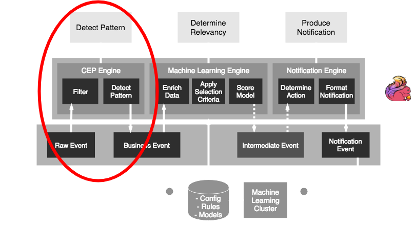
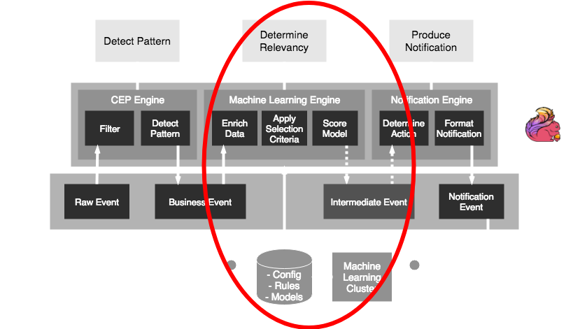

Streaming Analytics
How to get fast predictions from real-time data
with Flink, Kafka, Cassandra and PMML
Bas Geerdink | DevDays Riga | 31 May 2018
Agenda
- Streaming Analytics use cases
- Architecture and Technology
- Deep dive:
- Kafka-Flink connection
- Parallel processing
- Event Time, Windows, and Watermarks
- Exactly-once Processing
- Model scoring
- Wrap-up
Use Cases
| Sector | Data source | Pattern + prediction | Notification |
|---|---|---|---|
| Finance | Debit card transactions | Running out of credit | Actionable insight |
| Finance | Payment data | Fraud detection | Block money transfer |
| Insurance | Page visits | Customer is stuck in form | Chat window |
| Healthcare | Patient data | Heart failure | Alert doctor |
| Retail | Tweets | Sentiment analysis | Social media response |
| Traffic | Number of cars passing | Traffic jam | Update route info |
| Manufacturing | Logs | System failure | Alert to sys admin |
Streaming Analytics Pattern
The common pattern in all these scenarios:- Detect pattern by combining data (CEP)
- Determine relevancy (ML)
- Produce notification
Architecture

Technology
Styx uses a selection of source frameworks- Data stream storage: Kafka
- Stream processing: Flink
- Persisting rules, models, and config: Cassandra
- Model scoring: PMML and Openscoring.io
Deep dive part 1
Set up a Flink application
- A Flink job is a Java/Scala application
- Jobs (.jar) can be deployed to a running Flink cluster
- Maven dependencies:
org.apache.flink
flink-scala_2.11
1.5.0
provided
org.apache.flink
flink-streaming-scala_2.11
1.5.0
provided
Flink-Kafka integration
The FlinkKafkaConsumer and FlinkKafkaProducer classes provide easy connectivity
def createKafkaEventStream(env: StreamExecutionEnvironment):
DataStream[RawEvent] = {
// create KeyedDeserializationSchema
val readSchema = KafkaSchemaFactory.createKeyedDeserializer
(readTopicDef, rawEventFromPayload)
// consume events
val rawEventSource = new FlinkKafkaConsumer010[BaseKafkaEvent]
(toStringList(readTopicDef), readSchema, props)
// create source
env.addSource(rawEventSource)
.filter(_.isSuccess) // if decrypting from kafka succeeded
.flatMap(_.toOption)
}
Parallelism
- To get high throughput, we have to process the events in parallel
taskmanager.numberOfTaskSlots: 4
parallelism.default: 2
- The keyBy function distributes our stream into parallel parts
def createCepPipeline(sourceStream: DataStream[RawEvent]):
DataStream[BusinessEvent] = {
val windowStream = sourceStream
.keyBy(_.customerId.head) // create parallelism: 0..9
.window(GlobalWindows.create()) // window per key
.apply(new WindowResultFunction()) // logic: pattern match
.map(event => event.addTimeStamp("window"))
}
Event time
- Events occur at certain time ⇛ event time
- ... but arrive a little while later ⇛ processing time

env.setStreamTimeCharacteristic(TimeCharacteristic.EventTime)
Out-of-orderness

Windows
- In processing infinite streams, we usually look at a time window
- A windows can be considered as a bucket of time
- There are different types of windows:
- Sliding window
- Tumbling window
- Session window
Windows

Watermarks
- Watermarks are timestamps that trigger the computation of the window
- They are generated at a time that allows a bit of slack for late events
- By default, any event that reaches the processor later than the watermark, but with an event time that should belong to the previous window, is ignored
- It's possible to allow late events to trigger recomputation of a window by setting the allowedLateness property
Watermarks
- In Flink, we inject a Timestamp Assigner & Watermark Generator
createKafkaEventStream(env, readTopicDef, kafkaProperties, jobName)
.assignTimestampsAndWatermarks(
new TimedEventWatermarkExtractor[T]())
- There are periodic (timer-based) and punctuated (stream-based) watermarks:
- AssignerWithPeriodicWatermarks
- AssignerWithPunctuatedWatermarks
Event Time and Watermarks
class TimedEventWatermarkExtractor
extends AssignerWithPeriodicWatermarks[TimedEvent]() {
// specify the event time
override def extractTimestamp(element: TimedEvent,
previousElementTimestamp: Long): Long = {
// set event time to 'eventTime' field in events
element.eventTime.getMillis
}
// this method is called to emit a watermark every time the
// ExecutionConfig.setAutoWatermarkInterval(...) interval occurs
override def getCurrentWatermark: Watermark = {
// one second delay for processing of window
new Watermark(System.currentTimeMillis() - 1000)
}
}
Exactly-once processing
- An event has three possible statuses:
- Not processed (in cache on the Kafka bus)
- In transit (picked up by Flink, in a window) = state
- Processed (handled by Flink)
- Kafka knows for each consumer which data has been read: offset
- Flink has checkpoints that allow to replay the stream in case of failures
- This combination guarantees that an event goes through the system exactly once
Savepointing and checkpointing
- A checkpoint is a periodic dump to file of the in-memory state
env.enableCheckPointing(10000) // checkpoint every 10 seconds
- A savepoint is a manual checkpoint
- The state dumps can be used for recovery and replay
# Supported backends: jobmanager, filesystem, rocksdb
#
state.backend: filesystem
Upgrading a Flink job
# show the current list of jobs: gives job id
/flink/bin/flink list
# create a savepoint
/flink/bin/flink savepoint [JOB_ID]
# wait for response: gives savepoint id
/flink/bin/flink cancel [JOB_ID]
# start the new job
/flink/bin/flink run -p 4 \
-s jobmanager://savepoints/[SAVEPOINT_ID] \
-c com.styx.StyxAppJob styx-app-0.0.1.jar \
--config /opt/flink/jars/reference.conf
Flink CEP
val cep = Pattern.begin[ClickEvent]("Page1").within(Time.seconds(1))
.where( event =>
event match {
case c: ClickEvent => c.processStep.equals(steps(0))
case _ => false
})
.next("Page2") // check that Page1 is followed by Page2
.where(event => event match {
case c: ClickEvent => c.processStep.equals(steps(1))
case _ => false
})
.next("Page3") // check that Page2 is followed by Page3
.where(event => event match {
case c: ClickEvent => c.processStep.equals(steps(2))
case _ => false
})
.within(Time.minutes(30)) // no match = pattern detected
}
Deep dive part 2
PMML
- Data scientists who build and train a machine learning model can export it to PMML (or PFA) format
from sklearn.linear_model import LogisticRegression
from sklearn2pmml import sklearn2pmml
events_df = pandas.read_csv("events.csv")
pipeline = PMMLPipeline(...)
pipeline.fit(events_df, events_df["notifications"])
sklearn2pmml(pipeline, "LogisticRegression.pmml", with_repr = True)
PMML

Model scoring
- By doing a flatMap over the events we can apply functions that process/transform the data in the windows
- For example:
- enrich each business event by getting more data
- filtering events based on selection criteria (rules)
- score a machine learning model on each event
- write the outcome to a new event / output stream
Openscoring.io
def score(event: RichBusinessEvent, pmmlModel: PmmlModel): Double = {
val arguments = new util.LinkedHashMap[FieldName, FieldValue]
for (inputField: InputField <- pmmlModel.getInputFields.asScala) {
arguments.put(inputField.getField.getName,
inputField.prepare(customer.all(fieldName.getValue)))
}
// return the notification with a relevancy score
val results = pmmlModel.evaluate(arguments)
pmmlModel.getTargetFields.asScala.headOption match {
case Some(targetField) =>
val targetFieldValue = results.get(targetField.getName)
case _ => throw new Exception("No valid target")
}
}
}
Wrap-up
- There are plenty of streaming analytics use cases, in any business domain
- The common pattern is: CEP → ML → Notification
- Pick the right tools for the job; Kafka and Flink are amongst the best
- Be aware of typical streaming data issues: late events, state management, distribution
- Styx is a proven open source framework for Streaming Analytics that is flexible and scalable
Thanks!
Read more about streaming analytics at:
Source code and presentation is available at: